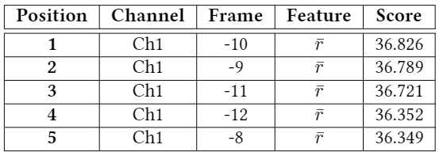
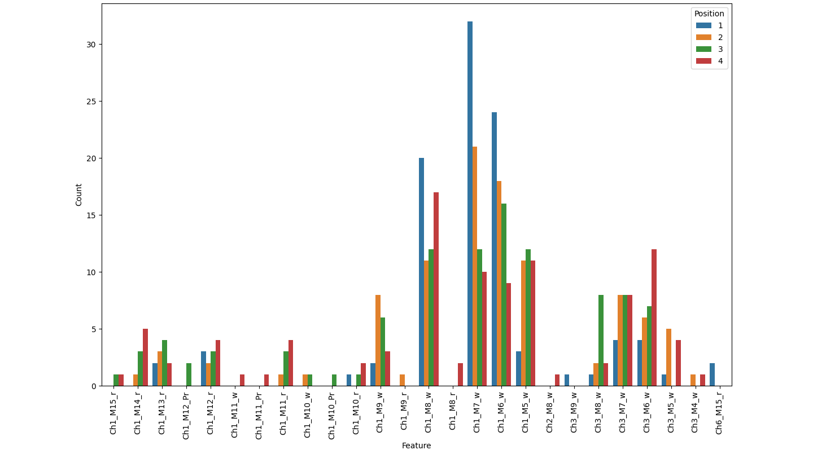

drawBarPlot module
Dependencies
The libraries that are necessary to execute this module are the following ones:
from matplotlib import pyplot as plt
import numpy as np
import pandas as pd
import seaborn as sns
import pdb
Functions
- drawBarPlot.getColNames(channelN, stackingWidth, featureNames)
This function creates an array with the names that identifies each feature column. It also creates a first column named “Position”, that serves to
- Parameters
channelN (int) – The number of channels that are being analyzed.
stackingWidth (int) – Number of frames stacked in the stacking filter. It has to be kept in mind that this is the number stacked to each side of the central frame, so the total number of frames is
2*nFeatures + 1.featureNames (list) – The names given to each kind of feature in every frame.
- Return type
list
- Returns
A list containting the names of the feature columns.
- Example of use::
>>> import drawBarPlot >>> nChannel = 2 # Two channels >>> stackingWidth = 2 # 2 frames stacked >>> features = ['Pr','w','zr'] # Three features >>> colNames = drawBarPlot.getColNames(nChannel,stackingWidth,features) >>> print(colNames) ['Position', 'Ch1_M2_Pr', 'Ch1_M2_w', 'Ch1_M2_zr', 'Ch1_M1_Pr', 'Ch1_M1_w', 'Ch1_M1_zr', 'Ch1_0_Pr', 'Ch1_0_w', 'Ch1_0_zr', 'Ch1_P1_Pr', 'Ch1_P1_w', 'Ch1_P1_zr', 'Ch1_P2_Pr', 'Ch1_P2_w', 'Ch1_P2_zr', 'Ch2_M2_Pr', 'Ch2_M2_w', 'Ch2_M2_zr', 'Ch2_M1_Pr', 'Ch2_M1_w', 'Ch2_M1_zr', 'Ch2_0_Pr', 'Ch2_0_w', 'Ch2_0_zr', 'Ch2_P1_Pr', 'Ch2_P1_w', 'Ch2_P1_zr', 'Ch2_P2_Pr', 'Ch2_P2_w', 'Ch2_P2_zr']
- drawBarPlot.getIndexesDataFrame(scores, colNames[, maxPosition])
This function creates a DataFrame with the count of how many times has been ranked each feature in the
nposition. This function is intended to be used when the data is processed in multiple batches and the highest scored features are to be known. ThedrawBarPlot.printRanking()function has been created to work with one single batch so, when there are multiple batches, a bar plot is drawn instead. Getting the scores as a Dataframe is the first step for drawing the plot.- Parameters
scores (numpy.ndarray) – The scores obtained with the
getFeatureScores.main()function. It is a bidimensional array, where the first index corresponds to the batches and the second index corresponds to the feature scores.colNames (list) – Name of each feature column. Is obtained with the
drawBarPlot.getColNames()function.maxPosition – It is the last position considered. If 3 is selected, only is going to be count how many times each feature has been ranked in the first, second or third position.
- Type
int, default=4
- Return type
pandas.core.frame.DataFrame- Returns
A DataFrame containing how many times each feature has been ranked in the
nposition.
Example of use:
>>> import numpy as np >>> import datasetManipulation >>> import drawBarPlot >>> from sklearn.model_selection import train_test_split >>> batch = np.load("batch.npy") >>> batch = datasetManipulation.removeNaN(batch)[0] >>> features = batch[:,1:] >>> labels = batch[:,0] >>> >>> batch1Features, batch2Features, batch1Labels, batch2Labels = train_test_split(features, labels, test_size=0.5) >>> >>> nBatches = 2 # Two batches: batch 1 and batch 2 >>> rowSize = np.shape(features)[1] # Number of features >>> scores = np.zeros((nBatches,rowSize)) >>> >>> from sklearn.feature_selection import SelectKBest, f_classif >>> >>> selector = SelectKBest(f_classif) >>> selector.fit(batch1Features,batch1Labels) SelectKBest() >>> scores[0,:] = selector.scores_ >>> >>> selector.fit(batch2Features,batch2Labels) SelectKBest() >>> scores[1,:] = selector.scores_ >>> >>> nChannels = 6 >>> stackingWidth = 15 >>> featureNames = ['w','Pw','Pr','z','r'] >>> >>> colNames = drawBarPlot.getColNames(nChannels,stackingWidth,featureNames) >>> >>> df = drawBarPlot.getIndexesDataFrame(scores, colNames, maxPosition=6) >>> >>> print(df) Position Ch1_M15_w Ch1_M15_Pw Ch1_M15_Pr Ch1_M15_z Ch1_M15_r ... Ch6_P14_r Ch6_P15_w Ch6_P15_Pw Ch6_P15_Pr Ch6_P15_z 0 1 0 2 0 1 0 ... 0 0 0 0 0 1 2 2 0 0 0 0 ... 0 0 0 0 0 2 3 1 0 4 0 0 ... 0 0 0 0 0 3 4 3 0 0 0 0 ... 0 0 0 0 0 4 5 0 0 2 0 0 ... 0 0 0 0 0 5 6 0 0 0 0 0 ... 0 0 0 0 0 [6 rows x 931 columns]
Note
In the example, the printed Dataframe has been manipulated in order to make clearer what the aim of this function is. When there are a great amount of features (in the example 930 features are being used) it is not strange that only
0values appear in the features that appear into the print. That does not mean that function is not working. It is just that the important features are not listed in the beginning nor the ending. They are in an intermediate position and they have not been printed. It is easy to check that the rows content non-zero values by summing all values in the rows withdf.sum(axis=1).
- drawBarPlot.printRanking(scores, colNames, maxPosition, scoresName, latexFormat=True)
This function returns a ranking with the highest scores as a string that can be displayed or saved to a file.
- Parameters
scores (numpy.ndarray) – The scores calculated by the selection algorithm.
colNames (list) – Name of each feature column. Is obtained with the
drawBarPlot.getColNames()function.maxPosition (int) – The last position considered in the ranking.
scoresName (str) – Name of the used score function.
latexFormat (boolean) – If it is set to
True, the format of the output string will be a table formated to be inserted into a LaTeX document. If it is set toFalse, the output will be plain text formatted as a table.
- Return type
str
- Returns
The function returns a string formatted as a table, in plain text or in LaTeX format.
Example of use:
>>> import numpy as np >>> import datasetManipulation >>> import drawBarPlot >>> batch = np.load("batch.npy") >>> batch = datasetManipulation.removeNaN(batch)[0] >>> features = batch[:,1:] >>> labels = batch[:,0] >>> from sklearn.feature_selection import SelectKBest, f_classif >>> >>> selector = SelectKBest(f_classif) >>> selector.fit(features,labels) SelectKBest() >>> scores = selector.scores_ >>> >>> nChannels = 6 >>> stackingWidth = 15 >>> featureNames = ['w','Pw','Pr','z','r'] >>> >>> colNames = drawBarPlot.getColNames(nChannels,stackingWidth,featureNames) >>> maxPosition = 5 >>> scoresName = 'f_classif' >>> >>> ranking = drawBarPlot.printRanking(scores, colNames, maxPosition, scoresName, latexFormat=False) >>> print(ranking) Score ranking for f_classif Position Feature Score 1 Ch1_M10_r 36.825745 2 Ch1_M9_r 36.78888 3 Ch1_M11_r 36.720818 4 Ch1_M12_r 36.352417 5 Ch1_M8_r 36.349323 >>> ranking = drawBarPlot.printRanking(dirPath, scores, colNames, maxPosition, scoresName, latexFormat=True) >>> print(ranking) \begin{tabular}{|c|c|c|c|c|} \hline \textbf{Position} & \textbf{Channel} & \textbf{Frame} & \textbf{Feature} & \textbf{Score} \\ \hline\hline \textbf{ 1 } & Ch1 & -10 & $\bar{r}$ & 36.826 \\ \hline \textbf{ 2 } & Ch1 & -9 & $\bar{r}$ & 36.789 \\ \hline \textbf{ 3 } & Ch1 & -11 & $\bar{r}$ & 36.721 \\ \hline \textbf{ 4 } & Ch1 & -12 & $\bar{r}$ & 36.352 \\ \hline \textbf{ 5 } & Ch1 & -8 & $\bar{r}$ & 36.349 \\ \hline \end{tabular}
After pasting this code into a LaTeX document and compiling it, the resulting table should look like this:

{kind=link}
- drawBarPlot.main(dirPath, uttType, analyzedLabels)
This is the main function of the module. It reads the scores calculated and saved by the
getFeatureScores.main()function. If the data is analyzed by using a single batch, the function will print a ranking of the best features. If the data has been divided in multiple batches, the function will draw a bar plot that shows how many times wach feature has been ranked in the considered positions.- Parameters
dirPath (str) – Path to the base directory of the analyzed corpus.
uttType (str) – The type of utterances that are being analyzed:
audible,whisperedorsilent.analyzedLabels (str) – The type of labels that are being analyzed:
Simple,TransitionsorAll
This is an example of the image created by the function:

{kind=link}